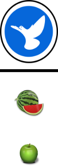

<!DOCTYPE html>
<html>
<head>
<title>Game</title>

<!--online run
<script src="lib/vendors/jspsych-7.1.2/jspsych.js"></script>
<script src="lib/vendors/jspsych-7.1.2/plugin-html-keyboard-response.js"></script>
<script src="lib/vendors/jspsych-7.1.2/plugin-html-button-response.js"></script>
<script src="lib/vendors/jspsych-7.1.2/plugin-preload.js"></script>
<script src="lib/vendors/jspsych-7.1.2/plugin-fullscreen.js"></script>
<script src="lib/vendors/jspsych-7.1.2/plugin-instructions.js"></script>
<script src="lib/vendors/jspsych-7.1.2/plugin-survey-text.js"></script>
<script src="lib/vendors/jspsych-7.1.2/plugin-survey-multi-choice.js"></script>
<link rel="stylesheet" href="lib/vendors/jspsych-7.1.2/jspsych.css">
<link href="./css/my_exp.css" rel="stylesheet" type="text/css">
<script type="text/javascript" src="lib/jspsych-7-pavlovia-2022.1.1.js"></script>-->

<!-- local run-->
<script src="jspsych/dist/jspsych.js"></script>
<script src="jspsych/dist/plugin-html-keyboard-response.js"></script>
<script src="jspsych/dist/plugin-html-button-response.js"></script>
<script src="jspsych/dist/plugin-preload.js"></script>
<script src="jspsych/dist/plugin-instructions.js"></script>
<script src="jspsych/dist/plugin-survey-text.js"></script>
<script src="jspsych/dist/plugin-survey-multi-choice.js"></script>
<script src="jspsych/dist/plugin-fullscreen.js"></script>
<script src="jspsych/dist/plugin-html-button-response.js"></script>
<script src="jspsych/dist/plugin-html-slider-response.js"></script>
<link href="jspsych/dist/jspsych.css" rel="stylesheet" type="text/css" />
<link href="css/my_exp.css" rel="stylesheet" type="text/css">

</head>
<body></body>
<script>
/* initialize jsPsych */
var jsPsych = initJsPsych({
            on_finish: function () {
                download_csv(jsPsych.data.get().csv());
            }
         });

    // capture info from Prolific
var subject_id = jsPsych.data.getURLVariable('PROLIFIC_PID');
if (subject_id==undefined){
    subject_id="DEMO"
}
var study_id = jsPsych.data.getURLVariable('STUDY_ID');
var session_id = jsPsych.data.getURLVariable('SESSION_ID');

jsPsych.data.addProperties({
subject_id: subject_id,
study_id: study_id,
session_id: session_id
});
/* create timeline */
var timeline = [];
/* init connection with pavlovia.org
var pavlovia_init = {
        type: jsPsychPavlovia,
        command: "init"

};
timeline.push(pavlovia_init); */
function download_csv(csv) {
            var hiddenElement = document.createElement('a');
            file_name = "task.csv"
            hiddenElement.href = 'data:text/csv;charset=utf-8,' + encodeURI(csv);
            hiddenElement.target = '_blank';
            hiddenElement.download = file_name;
            hiddenElement.click();
        }
var root = document.documentElement;
var vis_angle_px = 105
root.style.setProperty('--left_fruit', window.screen.width / 2 -250+ "px");
root.style.setProperty('--middle_fruit', window.screen.width / 2-35+ "px");
root.style.setProperty('--top_fruit', window.screen.height / 2 +50+"px");
root.style.setProperty('--left_company', window.screen.width / 2 -300+ "px");
root.style.setProperty('--top_company', window.screen.height / 2 -300+"px");
root.style.setProperty('--top_one_company', window.screen.height / 2 - 300 + "px");
root.style.setProperty('--left_one_company', window.screen.width / 2 - (110/2) + "px");
root.style.setProperty('--click1', window.screen.width / 2 -500+ "px");
root.style.setProperty('--click2', window.screen.width / 2 -250+ "px");
root.style.setProperty('--click3', window.screen.width / 2 + "px");
root.style.setProperty('--click4', window.screen.width / 2 +250+ "px");
root.style.setProperty('--click5', window.screen.width / 2 +500+ "px");
/* define welcome message trial */
var welcome = {
    type: jsPsychHtmlKeyboardResponse,
    stimulus: "Welcome to the experiment. Press any key to begin."
};
var companies = [0,1,2,3,4];
var fruit = [0,1,2,3,4];
var block = 0;
var blocks = 3;
var company_fruit = [[0,1],[1,2],[2,3],[3,4],[4,0]]; //which fruits every company gets
var fruit_company = [[0,4],[0,1],[1,2],[2,3],[3,4]] //which companies each fruit gets
var fruit_images = ['images/fruit/apple.png', 'images/fruit/banana.png','images/fruit/grapes.png','images/fruit/strawberry.png','images/fruit/watermelon.png']
var fruit_names = ['apple','banana','grapes','strawberry','watermelon']
var company_images = ['images/companies/1.png', 'images/companies/2.png', 'images/companies/3.png', 'images/companies/4.png','images/companies/5.png']
var example_images = ['images/two_companies.png', 'images/one_company.png', 'images/fruit_example.png', 'images/reward_example.png','images/company1.jpg','images/company2.jpg','images/company3.jpg','images/company4.jpg','images/company5.jpg',"images/keyboard.png"]
var fixation = '<div class="fixation">+</div>'
var shuffled;
var preload = {
type: jsPsychPreload,
images: [example_images,company_images,fruit_images]
};
timeline.push(preload)
var enter_fullscreen = {
type: jsPsychFullscreen,
fullscreen_mode: true,
message : '<p>This experiment will be in fullscreen mode. <br> <b>Please make sure your browser is on 100% zoom, and your keyboard language is set to ENGLISH.</b></p>'
}

/*---------------------------------------------------- 
    Start instructions
    ------------------------------------------------------*/
    var instructions_learning = {
        on_start: function () {
            if (document.querySelector('#cursor-toggle') != null) {
                document.querySelector('#cursor-toggle').remove()
            }
            counter_correct_click=0;
        },
        type: jsPsychInstructions,
        pages: ["<b><u>Welcome to the market game</u></b><br><br> In this game <b>you are the manager</b> of a small business that sells fruit at the market",
            "You have <b>5 shipping companies</b> working for you <br><br> Each company transports to the market <b>two kinds of fruit</b>",
            "We will start by making sure you are familiar with each company and the fruit they transport",
            "These are the logos of the 5 transportation companies<br><br> ",
            "<p>These are the 5 fruits of which each company transports 2<br><br> ",
            "You will now be shown each company and the two fruits it transports<br><br> <b>Take your time to try and remember which fruit each company transports</b>",
            "",
            "",
            "",
            "",
            "",
            "<p>You will now be trained on your knowledge of what fruit each company transports<br><br> <b>Before starting you can go back and take your time to try and remember which fruits are being transported by each company</b></p>",
            "Your task is to <b>click using your mouse the two fruit the shown company tansports</b>",
            "You will need to <b>answer correctly for all the companies to continue to the next learning task</b>",
            ],
        show_clickable_nav: true,
        on_finish: is_training=true
    };
    var instructions_learning_training = {
        on_start: function () {
            if (document.querySelector('#cursor-toggle') != null) {
                document.querySelector('#cursor-toggle').remove()
            }
            is_training=true;
            counter_correct=0;
        },
        type: jsPsychInstructions,
        pages: ["<p style='text-align:center'> <b>Great job!</b></p> You finished the first learning part. Now we would like to make things a bit more difficult",
            "Each time you will be presented with <b>a company and two fruit, one which the company is transporting and one which it does not </b><br>",
            "Your task is to choose the fruit which the shown company is transporting<br> You can select the <b>left fruit by pressing on the letter 'S' on your keyboard,</b> and the <b>right fruit by pressing on the letter 'K' on your keyboard</b>",
            "You will only have <b>2.5 seconds</b> to select the correct fruit<br>",
            "After 5 correct answers you will move on to the next company",
            ],
        show_clickable_nav: true
    };

    var instructions_learning_regular = {
        on_start: function () {
            if (document.querySelector('#cursor-toggle') != null) {
                document.querySelector('#cursor-toggle').remove()
            }
            is_training=false;
            counter_correct=0;
            counter_errors=0;
        },
        type: jsPsychInstructions,
        pages: ["<p style='text-align:center'> <b>Good job!</b></p> You finished the second part. Now we would like to take it one step further",
            "<p style='text-align:center'> You will see a fruit and two logos as before. The only difference is that now <b>companies will be shown in a mixed order and your mistakes will count.</b></p>",
            "Your task is to choose the company which transports the shown fruit. <br> You can select the <b>left company by pressing on the letter 'S' on your keyboard,</b> and the <b>right company by pressing on the letter 'K' on your keyboard</b>",
            "You will have <b>2.5 seconds</b> to select the correct company<br>",
            "You will need to <b>answer correctly 25 times before moving on in the game</b>.<br> After <b>2 wrong or too slow responses the count will start from the beginning.</b>",
            ],
        show_clickable_nav: true
    };
            
    var instructions_learning_reverse = {
        on_start: function () {
            if (document.querySelector('#cursor-toggle') != null) {
                document.querySelector('#cursor-toggle').remove()
            }
            is_reverse=true;
            counter_correct=0;
            counter_errors=0;
        },
        type: jsPsychInstructions,
        pages: ["<p style='text-align:center'> <b>Great job!</b></p> You finished the third part and ready for the last part for today. Now we would like to test the opposite direction",
            "Next you will see a <b><u>fruit and two logos</u></b>. One of the logos is of a company who transports the shown fruit, and the other does not.",
            "Your task is to choose the company which transports the shown fruit. <br> You can select the <b>left company by pressing on the letter 'S' on your keyboard,</b> and the <b>right company by pressing on the letter 'K' on your keyboard</b>",
            "As before, you will have <b>2.5 seconds</b> to select the correct company<br>",
            "You will need to <b>answer correctly 25 times before finishing today's tasks</b>.<br> After <b>2 wrong or too slow responses the count will start from the beginning.</b>",
            ],
        show_clickable_nav: true
    };

    
    var completed;
    var current_learning_trial = 0;
    var counter_correct_click=0;
    var counter_correct=0;
    var counter_errors=0;
    var selected;
    var left_company;
    var right_company;
    var shuffled_companies = jsPsych.randomization.repeat(companies, 1);;
    var is_reverse;
    var is_training;
    function handleButtonClick(i) {
  // Handle button click event
  let data = {
    choice :i
  }
  this.jsPsych.finishTrial(data);
  // Perform actions specific to the clicked button
}
    function draw_learning(is_reverse,is_training,companies,company_images,fruit,fruit_images) {
    if(is_reverse){
    shuffled_fruit = jsPsych.randomization.sampleWithoutReplacement(fruit, 1)
    correct_company = jsPsych.randomization.sampleWithoutReplacement(fruit_company[shuffled_fruit], 1)
    filtered_company = companies.filter(a_company => a_company!= fruit_company[shuffled_fruit][0]&a_company!= fruit_company[shuffled_fruit][1]); //fruit that do not belong to shuffled company
    incorrect_company = jsPsych.randomization.sampleWithoutReplacement(filtered_company, 1)
    shuffle_location_correct = jsPsych.randomization.shuffle([0,1])
    locations = ['left_company_reverse','right_company_reverse']
    correct_with_tag = ""
    incorrect_with_tag = ""
    shuffled_fruit = ""
    return shuffled_fruit+correct_with_tag + incorrect_with_tag + fixation;
    }
    else if (is_training){
        step = Math.floor(counter_correct/5)
        shuffled_company = shuffled_companies[step]
    }
    else{   
    shuffled_company = jsPsych.randomization.sampleWithoutReplacement(companies, 1)
    }
    correct_fruit = jsPsych.randomization.sampleWithoutReplacement(company_fruit[shuffled_company], 1)
    filtered_fruit = fruit.filter(a_fruit => a_fruit!= company_fruit[shuffled_company][0]&a_fruit!= company_fruit[shuffled_company][1]); //fruit that do not belong to shuffled company
    incorrect_fruit = jsPsych.randomization.sampleWithoutReplacement(filtered_fruit, 1)
    shuffle_location_correct = jsPsych.randomization.shuffle([0,1])
    locations = ['fruit_left','fruit_right']
    correct_with_tag = ""
    incorrect_with_tag = ""
    shuffled_company = ""
    return shuffled_company+correct_with_tag + incorrect_with_tag + fixation;
    }
    function show_fruit(counter_correct_click,companies,company_images){
    // Generate the HTML code for the image buttons
    step = Math.floor(counter_correct_click/5)
    shuffled_company = shuffled_companies[step]
    var html = ""
    shuffled_fruit = jsPsych.randomization.repeat(fruit, 1);
    for (var i = 0; i < fruit_images.length; i++) {
        html += '<div class="jspsych-image-button" onclick="handleButtonClick(' + shuffled_fruit[i] + ')">';;
        html += '';
        html += '</div>';
    }
  
    return html;
    }
    
    function show_choice(is_reverse,is_training) {
        last_choice = jsPsych.data.getLastTrialData().values()[0].response
        last_rt = jsPsych.data.getLastTrialData().values()[0].rt
        correct_response=jsPsych.data.getLastTrialData().values()[0].correct_response
        if (is_reverse==true){
            shuffled = shuffled_fruit
        }
        else {
            shuffled=shuffled_company
        }
        if (is_training==true){

        }
        if ((last_choice == 's'&correct_response==0)|last_choice == 'k'&correct_response==1) {
            counter_correct+=1
            result="Correct! you have " + counter_correct + " correct answers"
            result_tag='<div class="fixation">'+result+'</div>'
            return shuffled+correct_with_tag+result_tag
        }
        else if (last_rt >2500 |last_rt==null) {
            if(counter_errors==1 & is_training==false){
            result = 'Too slow! starting again'
            counter_correct=0
            counter_errors=0
            
            }
            else {
            result = 'Too slow!'
            counter_errors=1
            }
        }
        else {
            if(counter_errors==1 & is_training==false){
            result = 'Incorrect, starting again'
            result_tag='<div class="fixation">'+result+'</div>'
            
            counter_correct=0
            counter_errors=0
            return shuffled+incorrect_with_tag+result_tag
            }
            else {
            result = 'Incorrect'
            result_tag='<div class="fixation">'+result+'</div>'
            counter_errors=1
            return shuffled+incorrect_with_tag+result_tag
            }
        }
        return '<div class="fixation">'+result+'</div>'
    }

    var learning_choice = {
        type: jsPsychHtmlKeyboardResponse,
        stimulus: function () {
            return draw_learning(is_reverse,is_training,companies,company_images,fruit,fruit_images)
        },
        choices: ['s', 'k'],
        trial_duration: 2500,
        data: { phase: 'model_learning',trial_name: 'learning_choice', trial_num: function () { return current_learning_trial } ,correct_response:function(){return shuffle_location_correct[0] }}

    }

    var learning_result = {
        type:jsPsychHtmlKeyboardResponse,
        stimulus: function () {
            return show_choice(is_reverse,is_training)
        },
        choices: "NO_KEYS",
        trial_duration: 1500,
        data: { phase: 'model_learning', trial_name: 'learning_result', trial_num: function () { return current_learning_trial } ,counter_correct:function(){return counter_correct},counter_errors:function(){return counter_errors}},
        on_finish: function () {
            current_learning_trial+=1
        }
        ,post_trial_gap:200
        }

    var learning_loop = {
    timeline: [learning_choice,learning_result],
    loop_function: function () {
        if (counter_correct>=25) {
            return false;
        } else {
            return true;
        }
    }
    }

    

    var start_learning = {
        type: jsPsychHtmlKeyboardResponse,
        stimulus: "<p> <br> Please be ready with your fingers on <b>s</b> and <b>k</b><br><br>  <br><br> <b> Press any key to begin</b></div>",
        post_trial_gap: 1000,
    }

    var image_selection_trial = {
    type: jsPsychHtmlButtonResponse,
    stimulus: function () {
    return show_fruit(counter_correct_click,companies,company_images)
        },
    choices: function() {
    // Generate the choices based on the number of images
    var choices = [];
    for (var i = 0; i < fruit_images.length; i++) {
        choices.push(fruit_names[i]); // Empty string as the label for each image button
    }
    return choices;
    },
    button_html: '',
    on_finish: function(data) {
        
    // Get the participant's choice
    var choice = jsPsych.data.getLastTrialData().values()[0].choice;
    // Check if the choice is correct
    if (choice==company_fruit[shuffled_company][0]|choice==company_fruit[shuffled_company][1]){
    counter_correct_click +=1;
    data.is_correct=true
}
else{
    var is_correct=false
    counter_errors+=1;
}
    }
}
var show_correct = {
        type: jsPsychHtmlKeyboardResponse,
        stimulus: function (data) {
        var is_correct = jsPsych.data.getLastTrialData().values()[0].is_correct;
            if(is_correct==true){
                return "<b>Correct!</b>"
            }
            else{
                return "<b>Incorrect!</b>"
            }
        },
        trial_duration: 1000,
        data: { phase: 'model_learning',trial_name: 'click_correct', trial_num: function () { return current_learning_trial }}

}
    var finish_learning = {
        type: jsPsychHtmlButtonResponse,
        stimulus: function () {
            return "<p><b>Congratulations!</b> <br><br> You succesfully learned which fruit each company transports. <br> <b>REMEMBER:</b> You will be paid only after completing the second part of the task tomorrow. <br>"
        },
        choices:["Click here to return to Prolific and complete the study"]
        , button_html: ['<a href=https://app.prolific.co/submissions/complete?cc=XXXXXXX target="_blank"> %choice%</a>']
    }

    var click_loop = {
    timeline: [image_selection_trial,show_correct],
    loop_function: function () {
        if (counter_correct_click>=25) {
            return false;
        } else {
            return true;
        }
    }
    }
    
    timeline.push(enter_fullscreen,instructions_learning,click_loop,instructions_learning_training,start_learning,learning_loop,instructions_learning_regular,start_learning,learning_loop,instructions_learning_reverse,learning_loop,finish_learning)
   
    /* finish connection with pavlovia.org 
var pavlovia_finish = {
    type: jsPsychPavlovia,
    command: "finish",
    participantId: subject_id
    };
timeline.push(pavlovia_finish); */
/* start the experiment */
jsPsych.run(timeline);

</script>
</html>